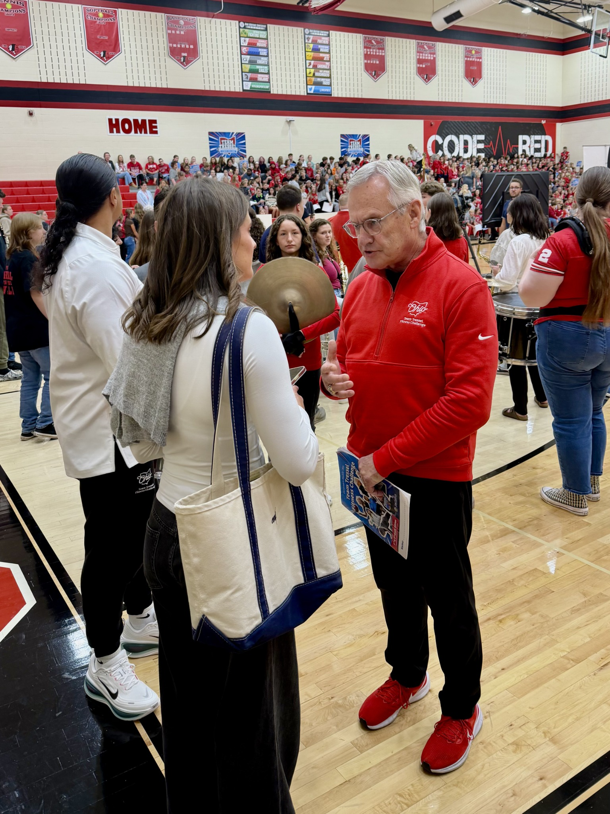

01
SEPTEMBER 2, 2026
HOSTING & AUDIO
HOSTING & AUDIO / RESOUND RADIO
Written and narrated weekly sports updates for Resound Radio, Cedarville’s student-run radio station.
01
SEPTEMBER 2, 2026
02
WEEK 6 / FALL 2026
03
WEEK 7 / FALL 2026
04
WEEK 8 / FALL 2026

ON ASSIGNMENT
Jim Tressel is the Lieutenant Governor of Ohio and a former Ohio State football coach.